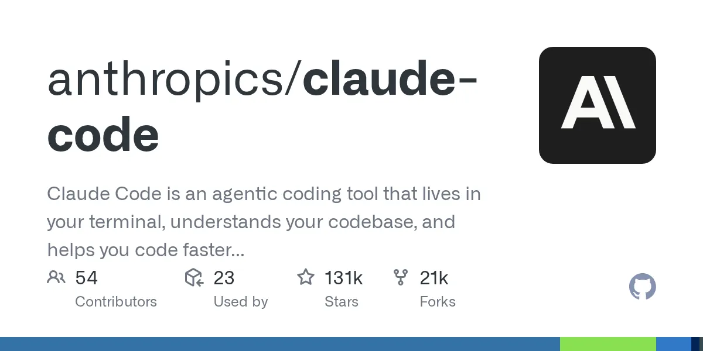
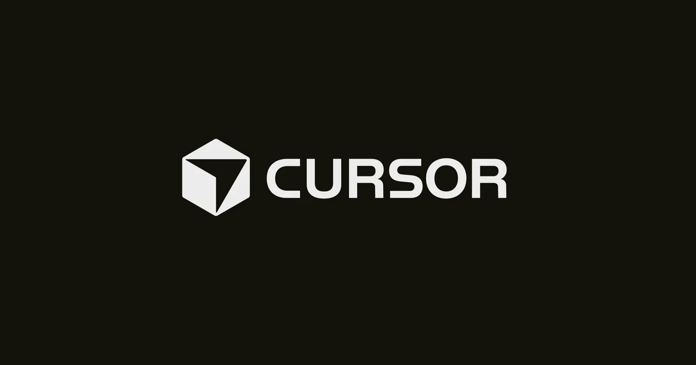
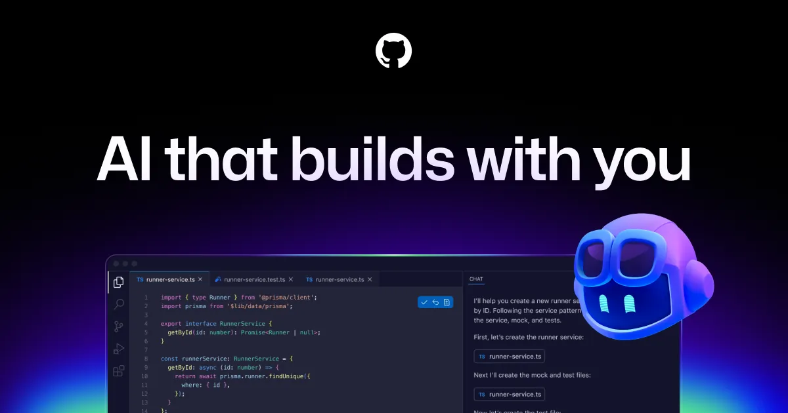

Live Workshop Blueprint · AI Coding Tools Benchmark
CODING AGENTS
CAGE MATCH
4 TOOLS · 1 TASK · REAL SCORES · LOCK TESTS BEFORE CLOCK STARTS
CONTESTANT ROSTER

ANTHROPIC
CLI
⭐ 131k


MICROSOFT / GITHUB
Extension

⚡ OPTIONAL 5th TEAM — LOCAL MODEL
Running a local-model team (Qwen3-Coder-480B-A35B ⭐ 16.6k via Ollama[5])
requires an RTX 4090 or Mac M3 Ultra — not a standard conference laptop.
Frontier-vs-local gap on hard coding tasks: ~27 points SWE-bench
(88.6% closed vs 60.5% best open-weight Nemotron[6]).
Cost crossover is not reached in a single 30-min workshop session — local wins on privacy and latency optics, not raw cost.[7]
SCORING RUBRIC
Correctness
40%
Completeness
25%
Code Quality
15%
Edge Cases
10%
Speed Bonus
10%
Post-event pass@3 sweep
Live score = initial signal only. Each team runs again twice after the audience leaves.
Only pass@3 separates fluky passes from reliably capable tools —
that sweep produces the publishable comparison table.[8]
CRITICAL CONSTRAINTS
CONSTRAINT 01 · BENCHMARK INTEGRITY
Lock the tests before the clock starts
Use a repo forked after all tools' training cutoffs. Lock
tests/
before any agent touches the codebase — the cage match's core integrity rule that vendors
cannot game.[9]
SWE-bench contamination: 35-point gap on Claude Opus 4.5
CONSTRAINT 02 · STATISTICAL VALIDITY
Results are directional, not definitive
A live event is a single trial. For the 4-tool axis, within-tool pass@1 variance
may exceed the between-tool gap. Announce this framing upfront so the audience
doesn't over-index on who "won" in the room.[8]
pass@3 sweep post-event = publishable data
CONSTRAINT 03 · #1 LIVE FAILURE MODE
Spec misalignment beats model quality
41.86% of all coding agent failures trace to agents misunderstanding requirements —
not model incapability.[10]
Put a
REQUIREMENTS.md in the repo. Use SMART spec. Define 3 explicit milestones.
41.86% of failures = spec misalignment
BENCHMARK INTEL · SWE-BENCH VERIFIED
2
Claude Opus 4.8
closed · cage match tool
88.6%
3
Claude Opus 4.7 (Adaptive)
closed
87.6%
4
GPT-5.3 Codex
closed · cage match tool
85.0%
▼ OPEN-WEIGHT FRONTIER ▼
27pt
frontier-vs-local gap on hard coding tasks
Epoch AI: open-weight lags closed frontier by ~4 months[13]
Epoch AI: open-weight lags closed frontier by ~4 months[13]
RESEARCH BRIEFINGS · 5 THREADS
103
CITATIONS
26
MIN READ
$8.44
RESEARCH COST